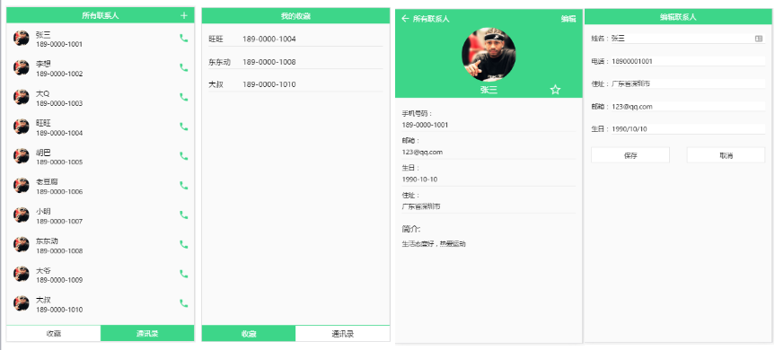
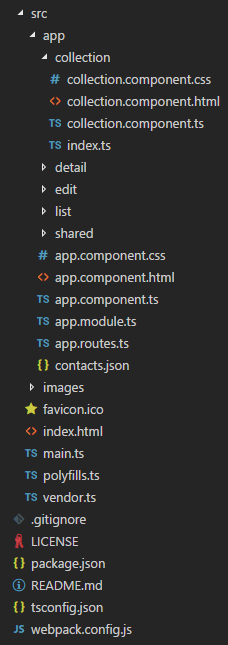
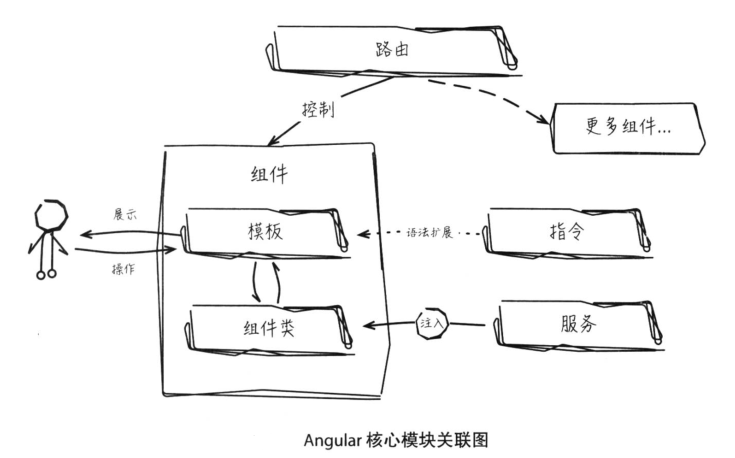
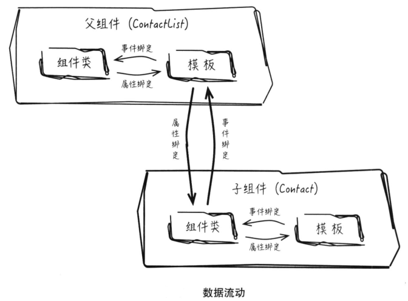
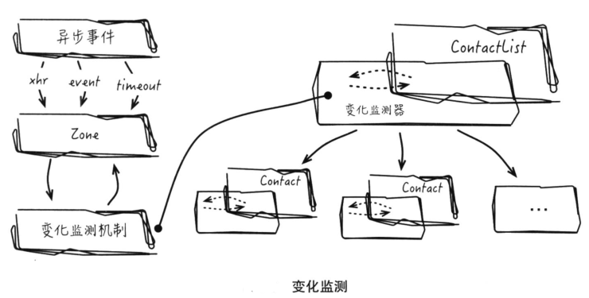
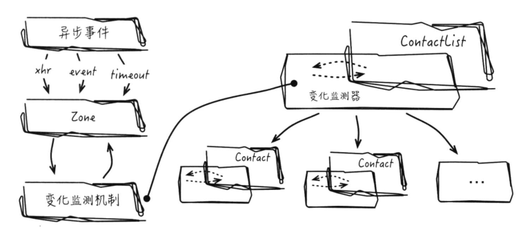

Angular2快速入门-通讯录Demo
在前面的HelloWorld的基础上，做一个通讯录Demo, 并实现对联系人的添加、收藏、编辑、删除（原Demo没有删除功能），依赖包的版本以源码的package.json为准，锁定了版本号，不推荐更改版本号，主要学Angular2开发应用的逻辑和思想，而不是解决版本依赖问题）。
package.json
1 | { |
Demo截图预览如下（官方Demo运行结果）：

如上图，主要是4个页面，分别对应联系人列表页，收藏页，编辑页（添加页），联系人详情页。
项目组织结构
组织结构如下图：

其中，主要分为4大模块：联系人列表模块（list）、联系人详情模块（detail）、编辑模块（edit）、收藏模块（collection）。页面的跳转由Angular的路由模块控制，src/app/app.router.ts配置了项目的所有路由。
src/app/app.router.ts
1 | import { Routes } from '@angular/router'; |
src/app/app.module.ts
1 | // 项目的主要模块都会被引入到app.module.ts中 |
数据操作是非常重要的，Angular对数据的增删改查是通过特定的服务实现的，同时已经将这些服务注入到NgModule中，这样在NgModule中引入组件就可以直接调用其中的方法，从而达到数据交互的目的，服务基本写法如下：1
2
3
4
5
6
7
8
9
10import { Injectable } from '@angular/core';
import { Http, RequestOptions, Headers } from '@angular/http';
@Injectable() // 表示ContactService需要注入它所依赖的其他服务（如Http服务）
export class ContactService{
constructor(
private http: Http
){}
// ...
}
Angular架构梗概
一个完整的Angular应用主要由6个重要部分构成，它们相互协作，各司其职。关系如下：
- 组件：与用户直接交互的是模版视图，模版视图并不是独立模块，它是组成组件的要素之一，另一个是组件类，用于维护组件的数据模型及功能逻辑。
- 模版
- 指令：指令与模版相互关联，最主要是增强模版特性，间接扩展模版的语法。
- 服务：服务是封装若干功能逻辑的单元，功能逻辑可以通过依赖注入机制引入到组件内部，作为组件功能的扩展。
- 依赖注入
- 路由：路由的功能是控制组件的创建和销毁，从而驱使应用界面跳转切换。

Angular基于组件设计的体现在：Angular应用接收用户指令、处理后输出相应视图的过程中，组件始终处于交互的出入口。组件承载了Angular的核心功能。
实际上页面所有部分均可分解为组件，即通过组件组合，嵌套，至上而下构成一个组件树，例如通讯录Demo中，包含了Header、ContactList以及Footer三个子组件、其中ContactList又有自己的子组件。
树状结构的组件关系意味着每个组件并不是孤立的存在，父子组件之间存在着双向的数据流动，要理解数据的流动，先了解组件间的调用方式，简单的说，组件的外在形态就是自定义标签，所以组件的调用实际体现在模版标签里的引用。比如Contact组件的示例代码：1
2
3
4
5
6
7
8
9
10({
selector: 'contact',
template: '<div> xxx ... </div>'
})
export class ContactComponent {
() item: ContactModel;
() update: EventEmitter<ContactModel>;
constructor() {}
// ...
}
@Input()和@Output()声明组件Contact对外暴露的接口，item变量用来接收来自父组件的数据源输入，update接口用于向父组件发送数据，而父组件ContactList引用子组件并调用这些接口的具体实现为：1
2
3
4
5
6
7
8
9
10
11
12
13
14
15
16@Component({
selector: 'contact-list',
template: `
<!-- ... -->
<!-- 使用<contact>标签调用ContactComponent组件 -->
<contact [item]="listItem" (update)="doUpdate(newItem)"></contact>
<!-- ... -->
`
})
export class ContactListComponent {
listItem: ContactModel[];
constrcutor(){}
doUpdate(item: ContactModel){
// ...
}
}
而父组件的模版中能够直接使用子组件ContactComponent定义的标签依赖“模块”特性。
由template属性值可见，父子组件之间通过类似于HTML属性的方式传递数据，其中[item]写法称为属性绑定，数据从组件流向子组件，(update)称为事件绑定，数据从子组件流向父组件。
Angular的模版里可以直接引用组件的成员属性，如listItem和doUpdate，组件类和模版之间的数据交互称为数据绑定，属性绑定和事件绑定属于数据绑定的范畴，属性绑定和事件绑定即可用于父子组件的数据传递、也可用于数据模型和模版视图之间的数据传递，所以在父子组件通信的过程中，模版充当类似桥梁的角色，连接着二者的功能逻辑。

Angular的数据流动不是自发形成的，流动需要一个驱动力，这个驱动力即Angular的变化检测机制，Angular是一个响应式系统，每次数据变动几乎都能实时处理，并更新对应视图。
虽然ES5提供了getter/setter语言接口来捕捉对象变动，但Angular通过适当的时机（通常是用户事件、setTimeout或XHR回调等异步事件）感知数据对象发生变动。具体来说，Angular通过Zones库捕捉这些异步事件。


每个组件背后都维护着一个独立的变化监测器，其记录着所属组件的数据变更状态，由于应用是以组件树的形式组织，因此对应也有一颗变化监测树。当Zones捕获到某异步事件后，它都会通知Angular执行变化监测操作，每次变化监测操作都始于根组件，并以深度优先的原则向叶子组件遍历执行。
变化监测机制使得开发者不必关系数据何时变动，结合数据绑定实现模版视图实时更新，就是Angular强大的数据变化检测机制。变化检测机制提供了数据自动更新的功能，若需手动捕获变化事件做一些额外处理，Angular提供了完善的生命周期钩子函数，比如通过ngOnChanges可以捕获变化，通过ngOnDestroy可以在组件销毁前做一些清理工作。